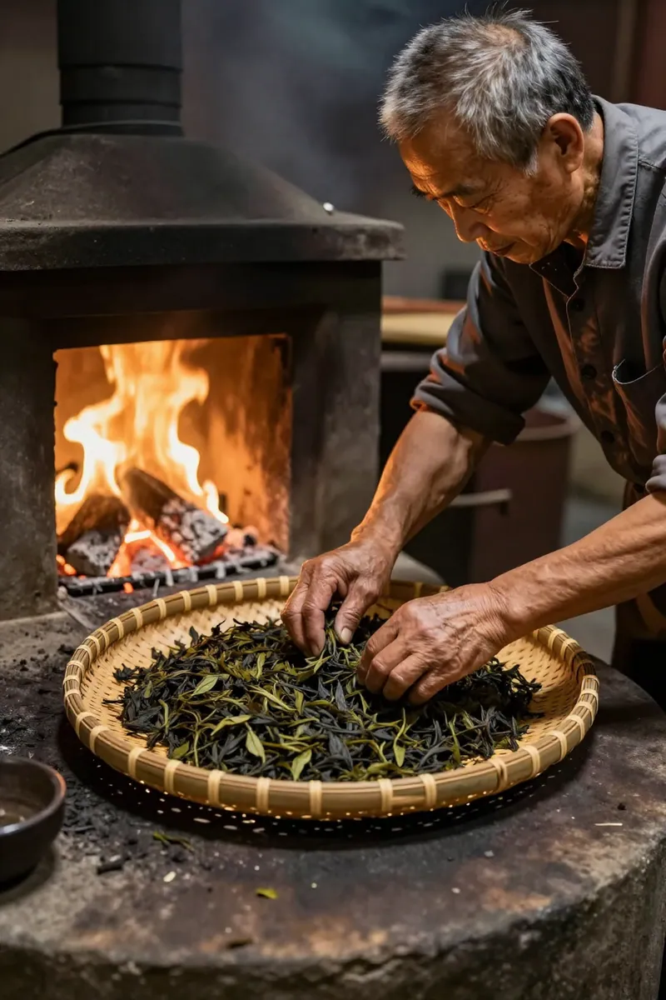
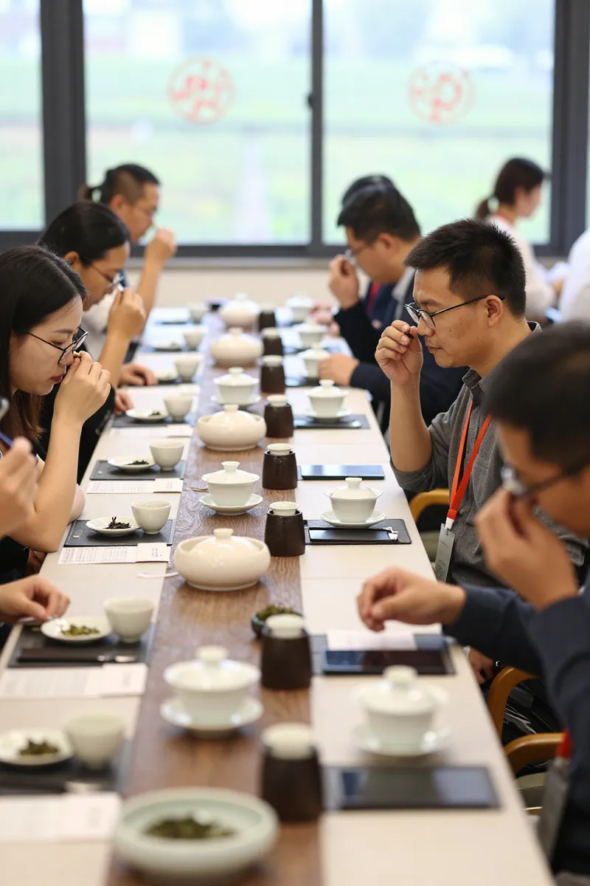

秋分茶王赛的故事
第一幕：秋分清晨，茶山醒來
秋分的清晨，凤凰山的天池边泛起一层薄薄的雾。阿凤姐比太阳还早起了半个小时，她站在茶园入口的石阶上，深吸一口带着露水和茶香混合的空气。
"阿凤，今日咁早？"
身后传来熟悉的脚步声，是老邻居文锡誉老师傅，背着一只竹筐，筐里装着今早刚采的茶青。
"文叔，你也早。今日秋分，我心挂住那锅茶王赛嘅事，瞓唔落。"阿凤姐转过身，眉头微微皱着，"你听讲未？今年参赛茶样过千份了，创办以来第一次破千，几犀利。"
文锡誉点点头，眼角的皱纹里透出一丝笑意："梗係听讲啦，整个凤凰镇都沸腾紧。不过我倒想讲，参赛数量多唔代表嘥嘅，关键系你只锅茶能不能突围而出。"
阿凤姐没有立刻回答。她的目光越过层层叠叠的茶树，落在远处雾气缭绕的乌岽山颠。今年嘅茶王赛，对她来讲不单止系一场比赛，更系对过去一整年茶园管理、采摘时机、炭焙工艺的一次全面检验。
"文叔，你觉得我今年用边只香型参赛好？定系继续用上年那只蜜兰香？"阿凤姐问。
文锡誉摸了摸下巴，缓缓说道："上年你只蜜兰香攞了银奖，已经好好。但系你要谂清楚，今年参赛茶样破千，高手如云。你那只蜜兰香胜在稳，但缺啲记忆点。我建议你试试将蜜兰香同你茶园里嗰只百年老枞结合，做一款复方，就系评审都没见过嘅。"
阿凤姐心中一动。呢个谂法几大胆，但系风险同样大。她想起前几天喺新闻度睇到，2026年凤凰单丛茶王赛吸引了成1005份茶样参赛，竞争前所未有咁激烈。
"好，我试下。"阿凤姐下定决心。

第二幕：炭焙房裡，匠心傳承
回到自家炭焙房，阿凤姐立即忙开了。她的炭焙房不大，但收拾得井井有条，墙角摆着一排从爷爷辈传下来的老锡罐，罐身被岁月打磨得油光锃亮。
阿凤姐将今早采摘的蜜兰香茶青倒入竹筛，开始第一道关键工序——晒青。阳光透过竹筛的缝隙，在茶青上投下细碎的光斑。
"阿凤姐，你喺度啊！"
门口传来一个后生仔的声音。阿凤姐抬头一看，系茶厂里做事的阿杰，佢手里拿着一份报纸。
"你睇下呢篇报道，几威架！"阿杰将报纸递过来，"讲紧凤凰单丛茶今年跻身全国茶品牌文化力前三十名喔，几犀利！我地凤凰单丛排全国第八名喺品牌文化消费力度，你知唔知有几劲？"
阿凤姐接过报纸，睇见报道里写住："凤凰单丛茶在品牌文化消费力榜单以855.08指数位列全国第八，系广东省唯一入选该榜单的品牌。"她心里涌起一股自豪感，但同时亦感到压力——品牌越威，对茶农既要求就越高。
"阿杰，你帮我去搵文叔，问我今日呢批茶青可唔可以提前进行浪青。"阿凤姐将报纸折好放到一旁，"茶王赛还有三日，我哋得抓紧时间。"
阿杰走后，阿凤姐独自一人守在炭焙房门口，观察住茶青的微妙变化。炭焙係凤凰单丛茶制作中最关键既工序之一，火候掌握得好与坏，直接决定茶叶的最终品质。传统炭焙用荔枝木做燃料，温度要控制在摄氏三十度左右，整个过程需要几十个小时不间断咁睇火。
阿凤姐记得爷爷当年教落："睇火唔系睇温度计，系睇茶既颜色、闻茶既香气、摸茶既湿度。呢啲嘢机器永远代替唔到人。"呢句话她一直记在心里，也係咁多年佢坚持手工炭焙的原因。
窗外，太阳渐渐升高，炭焙房里开始弥漫起一股淡淡的花蜜香。阿凤姐知道，呢个系茶叶开始转化的信号。

第三幕：茶王赛場，群雄爭霸
三日后的下午，凤凰镇茶叶评比大会现场人山人海。阿凤姐端着参赛茶样走进场馆，迎面碰到几位同样来参赛的老茶农。
"阿凤，今日攞咩来参赛啊？"其中一位茶农陈伯问道。
"老枞蜜兰香复方。"阿凤姐简短答道。
陈伯眉头一挑："好嘢，复方？你胆子几大喔！"
阿凤姐笑了笑，没有多讲。她搵到自己的展位，将茶样整齐咁摆好。今次参赛茶样共有1005份，创下历史新高，来自凤凰山各个山门、各个海拔，既有海拔千米以上既乌岽单丛，亦有低山台地茶，竞争十分激烈。
评审环节开始了。今次评审团阵容鼎盛，包括省农科院茶叶研究所的专家、潮州工夫茶艺非遗传承人，以及多位资深茶商。阿凤姐紧张咁等待住叫号。
"下面请128号参赛者，阿凤，惠州凤凰茶业，送审样品：老枞蜜兰香复方。"
阿凤姐走上前，将冲泡好的茶汤递给评审。几位评审轮流品尝，气氛一时有些凝重。
其中一位评审忽然抬起头："呢只茶有点意思，蜜兰香既花蜜底做得好实，但系又多了一层好微妙既木质香，应该系老枞既风格。但两者融合得好好，完全没有冲突。呢个系点做到架？"
阿凤姐答道："我地将自家茶园里一棵百年老枞蜜兰香既茶青，混合部分三十年到五十年树龄既蜜兰香茶青，一齐制作。两层香气叠加，但关键系浪青同炒青既时机把握，两者必须同步进行，否则会分层。"
评审们互相睇了一眼，眼神里都有赞许。
呢个时候，另一位评审开口了："我注意到呢只茶既回甘特别好，而且耐泡度极高，普通蜜兰香一般泡到第七八泡就淡了，但呢只茶泡到第十二泡仲有味道。你估下大概可以泡几多次？"
阿凤姐答："我地试过，最高可以到十五泡，品质依然稳定。"
全场发出一阵低低既惊叹声。
第四幕：揭曉結果，傳承創新
傍晚时分，颁奖典礼正式开始。凤凰镇党委书记谢优东亲自到场，为获奖茶农颁奖。
阿凤姐坐在台下，心跳加速。今次茶王赛参赛茶样超过千份，竞争创历届之最，能入围已经好犀利。
"获得本届凤凰单丛茶王赛银奖既系——"主持人拉长声音，"惠州凤凰茶业，阿凤！"
掌声雷动。阿凤姐上台接过奖杯，心里百感交集。银奖，距离金奖茶王只有一步之遥。
颁奖结束后，谢优东书记走过来，拍拍阿凤姐的肩膀："阿凤，你哋惠州凤凰茶业今年表现几好。虽然未能夺得茶王，但呢款老枞蜜兰香复方俾评审留下深刻印象。我听说你哋坚持原生态种植，全程唔使用化肥农药，呢个好难得。"
阿凤姐点点头："谢书记，其实今年参赛茶样破千，我反而觉得系好事。说明越来越多人重视凤凰单丛呢个品牌，市场越做越大。但系正因为市场大左，我哋更要将品质守住，宁可少D产量，都唔可以马虎。"
谢优东赞许道："讲得好！我哋凤凰单丛茶能跻身全国品牌文化力前三十，靠既就系一代代茶农既匠心同埋对品质既坚守。希望你哋继续努力，将呢份手艺传承落去。"
夜幕降临，阿凤姐站在凤凰山顶，俯瞰整个茶谷。远处的天池在月光下波光粼粼，近处的茶园在夜色中静谧安详。
她想起今日下午谢书记讲既一句话："凤凰单丛茶能走出潮汕，走向全国，靠的唔只系得天独厚既自然环境，更系几代茶人世代传承既匠心。"
阿凤姐轻轻点头，心里默默计划住：今年虽然只攞了银奖，但系老枞蜜兰香复方既方向系岩架。下一年，要提前做好准备，争取冲击茶王。
远处，传来一阵悠扬既潮州工夫茶歌：
"凤凰山上采茶娘，日头未出先去摘……"
歌声随风飘远，茶香亦随之飘向更远既地方。
常见问题解答（FAQ）
Q：凤凰单丛茶王赛系点样既比赛？
A：凤凰单丛茶王赛自1991年创办，历经三十余年发展，已成为潮州最具权威性、专业性同埋广泛影响力既茶业年度盛会。2026年参赛茶样首次突破千份大关，创下历史新高。
Q：凤凰单丛茶既品质点样分辨？
A：主要睇三个方面：一系海拔，高山茶（800米以上）既山韵更明显；二系树龄，老枞（60年以上）既茶汤更醇厚、回甘更持久；三系工艺，手工炭焙既茶叶香气更纯正、耐泡度更高。
Q：点解凤凰单丛茶能跻身全国茶品牌文化力前三十？
A：主要得益于三个方面：一系潮州工夫茶文化底蕴深厚；二系生态种植模式推广，茶草共生技术减少化肥使用15%；三系数字化茶园建设，实现从茶园到茶杯既全链条溯源。
Q：普通消费者点样选购正宗凤凰单丛？
A：建议选购时注意三点：一系睇产地，选择凤凰山核心产区；二系睇价格，低于200元/斤既要谨慎，好可能系外山茶冒充；三系睇商家资质，选择有SC认证、可溯源既正规厂家。
惠州凤凰茶业
专注凤凰单丛二十五年
源头茶园 · 古法炭焙 · 品质保证
地址：广东省惠州市惠城区